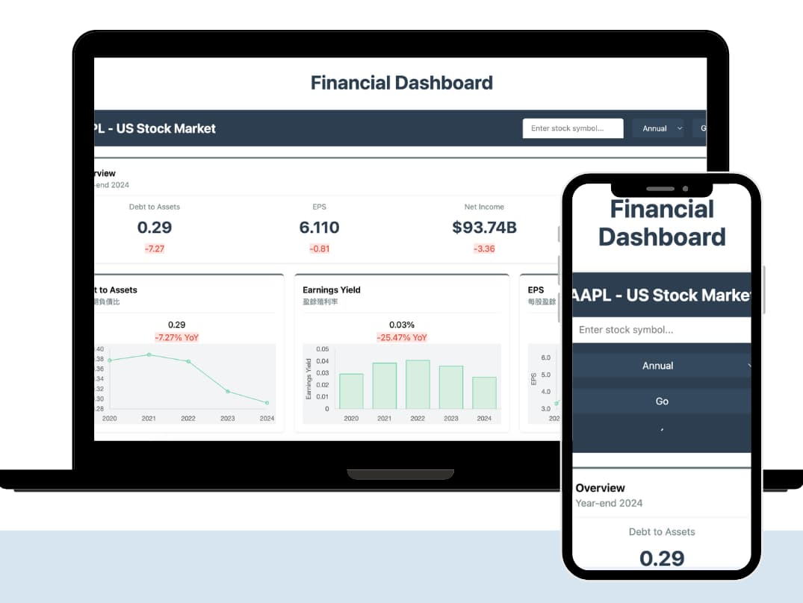
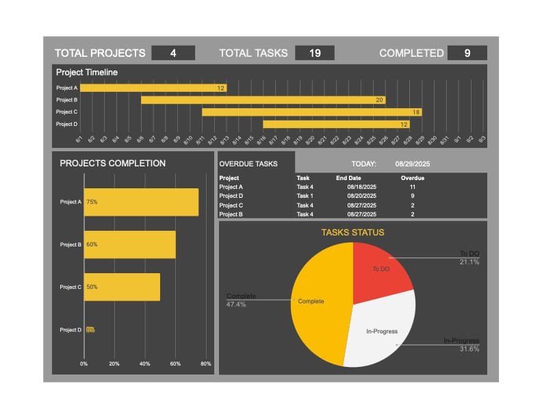

Hello, I'm Shanshan
Creative Technologist bridging data, code, and content together.

Financial Statements Charts
A dashboard to visualize financial statements data using React and Chart.js

What's That
A social drawing game based on Google's Quick Draw API, react, redux, and socket.io.
n8n Workflow
Automate marekting and internal workflows using n8n.

Project Manangement
Monitor project progress and resource allocation using Google Sheets.

Marketing Dashboard
Transform raw marketing campaign data into actionable insights using Google Sheets formulas and pivot tables.
Technical Skills
About Me
I started in digital marketing and data analytics, led teams in a media agency, then pivoted into software development after training in Barcelona. Now I focus on combining analytical thinking with user-facing development